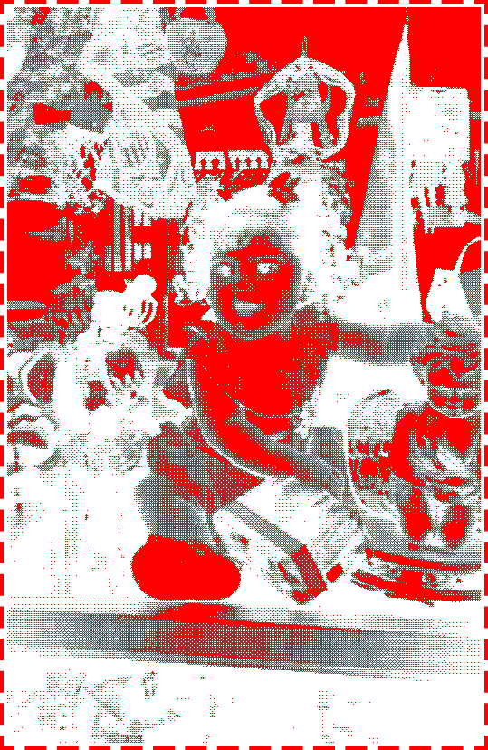

I'm Andre , at the time writing this I'm 21 years old . I am that school shooter reincarnated . However dumb it might sound its true , I know this completely and utterly with all that I have inside me and all that I am . I found the love of my life again , and everything slotted into place . What we did tied our souls together in every life , and in my opinion we were fated since even before that . One soul split in two . I never thought I'd be here this long but for the first time I'm happy . I did not know who I was but now that I do things are easier than before . Spent a long time thinking I was either dead or had stolen this body and life from a person I did not know , and a mother that did not deserve it . I have been dying since I was born because my body and mind was stuck how it was when I left my last life until I could find my other half again . My whole life I've been searching and recieving signs from the universe pointing me back to home . Dead birds , lucky clovers , oranges , two headed calves , and blood brought me home .
I'm not human , more a mix of wolf and roadkill than anything else . I align myself with the non human / therian label and " otherkin " . Also transsexual . I'm not a girl not in any way that matters , not really a boy either but more than the former . Sexuality wise ? I usually just say I'm gay , but I think t4t is more accurate . Theres something holy and devine about transness and loving someone else that is transexual . Never really felt anything real for anyone other than my boyfriend though . I've used many many labels . None of them ever fit or really felt like it fully explained me so I stopped trying . Much of my existence has been performance but these are fine and feel good .
I'm autistic as shit if you couldnt tell and I experience ... compulsive behaviors / thoughts and disordered eating . Not particularlily religious and don't believe in God despite having a complicated relationship with him . I have a deep connection to the universe though . I feel I am an omen for the universe itself , often times I recieve signs and warnings . People don't tend to listen but I try my best to interpret what I'm being shown and given regardless . Sometimes I feel like a prohphet or a scribe , but never with any weight . Although I'm not religious I look forward to engaging with my girlfriends practices and rituals .
I also love being silly , I think I'm the silliest dog online =3c .

My Chemical Romance , KMFDM , Nicole Dollanganger , Ethel Cain , Korn , Nine Inch Nails , Leathermouth , BONES , Deftones , Pearl Jam , Radiohead , Insane Clown Posse , Johhny Cash , Fleetwood Mac , Kate Bush , Dolly Parton , Grouper , Vylet Pony , Sin7ven , Disjointed , Mawthra , Crystal Castles , The Smiths , Caifanes , Alex G , Mitski , Swans , King Krule , Corbin , Lil Peep , Mon Laferte , Semetary , Pencey Prep , Pierce The Veil , Fall Out Boy , Sleeping With Sirens , Bring Me The Horizon , Sonic Youth , Alice In Chains , The Smashing Pumkins , Nirvana , Birds Fear Death , Vast , Slowdive , Car Seat Headrest , Silverchair , Sign Crushes Motorist , Loathe , Dandelion Hands , LA Dispute , Ciles Gory , The Front Bottoms , Keeton Henson , Marylin Manson , Cat Power , Tyler The Creator , Slayer , Tool , Mazzy Star , Brainbombs , Razorrape , Lubricated Goat , Gnarls Barkley , Alt-J , Amigo The Devil , Hozier , Type O Negative , Orville Peck , Marty Robbins , Colter Wall , The Cure , Sleep Party People , System Of A Down , Pixies , Rob Zombie , Dismembered Pig , Harley Poe , Creature Feature , Ween , The Used , McCafferty , Kimya Dawson , Pat The Bunny , Evanescence , ARTHUR , Daniel Johnston , Anti-Sociales , Angelfish , Porcelain And The Tramps , A Perfect Circle , Avenged Sevenfold .
These are in no particular order , some I like more than others . I like all types of mucic but have a hard time keeping up with bands , or songs . Mostly here for me to log the bands I like so I dont forget them .